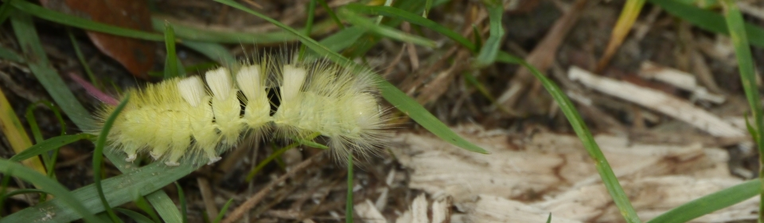

Raupe des Buchen-Streckfuß; (Falter)
Die Falter erreichen eine Flügelspannweite von 37 bis 67 Millimetern, dabei sind die Weibchen meist deutlich größer als die Männchen. Ihre Vorderflügel sind fein hellgrau gemustert und weisen zwei bis vier dunkle Zackenbinden auf. Bei den Männchen ist das mittlere Drittel der Flügel oft dunkler braun oder grau gefärbt. Es gibt sowohl sehr helle Formen, bei denen man im Extremfall nur die dunklen Zackenbinden auf hellem Grund erkennen kann, als auch dunkle Formen, die einfärbig dunkelbraun oder dunkelgrau gefärbt sind. Die Vorderbeine sind dicht behaart und langgestreckt. Die Raupen werden ca. 50 Millimeter lang, wobei die weiblichen, wie bei den Faltern, größer werden. Ihre Grundfärbung ist anfangs weißlichgrün oder gelbgrün, später kräftig gelbgrün oder braunrosa. Die Tiere sind auffallend behaart. Sie tragen zahlreiche lange, der Grundfärbung angepasste Haare an den Seiten; am Rücken erst nach dem siebten Segment. Auf den Segmenten vier bis sieben weisen sie sehr dichte, ebenfalls wie die Grundfärbung oder sehr hell gefärbte, nach oben gerichtete Haarpinsel auf. Auf dem elften Segment tragen sie einen weiteren, aber nach hinten gerichteten, rot oder orange gefärbten Haarpinsel, der deutlich weniger, aber längere Haare aufweist, als die übrigen Büschel. Bei den rosa gefärbten Raupen variiert dessen Färbung auch bis schwarz. Zwischen den Segmentringen sind die Raupen samten schwarz gefärbt. Diese Bereiche kann man deutlich erkennen, wenn sich die Raupen bei Gefahr zusammenrollen. Unterseitig sind die Raupen ebenfalls samtschwarz. Durch den roten Haarbüschel am Hinterleib der Raupen werden die Falter auch Rotschwanz genannt. Dieser Name wird aber auch noch für die Singvögel aus der Gattung Phoenicurus verwendet, zu der der Garten- und Hausrotschwanz gehören. (aus wikipedia)